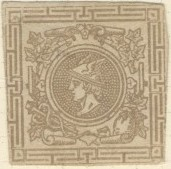

(Reduced size)
Note: on my website many of the
pictures can not be seen! They are of course present in the
catalogue;
contact me if you want to purchase the catalogue.
Example:
(Reduced size)
I have seen the values:
(in 'Kreuzer'): 3 k green on blue, 5 k red, 10 k blue
(in 'Heller'): 3 h brown, 5 h green, 6 h orange, 10 h red on
blue, 20 h brown and 30 h red on lilac.

These labels are not very rare. I've been told that they were issued from 1908 to 1913 for returned soldiers, hospital and Red Cross work.
10 k red and grey 20 k red and blue 40 k red and green 80 k red and lilac 1 Fl 20 red and gold
Value of the stamps |
|||
vc = very common c = common * = not so common ** = uncommon |
*** = very uncommon R = rare RR = very rare RRR = extremely rare |
||
| Value | Unused | Used | Remarks |
| 10 k | RR | *** | |
| 20 k | RR | ** | |
| 40 k | RR | ** | |
| 80 k | RR | *** | |
| 1 F 20 | RR | *** | |
5 k brown 20 k blue 25 k black 40 k green 50 k grey 60 k red 1 F yellow 2 F violet
There are two types of printing of these stamps, lithographed and engraved. There are also two types that can be distinguished by the value inscription, the background behind the value is more solid in one type. The word "1873" is also smaller in the that type. I have seen many of these stamps overprinted "SPECIMEN".
Value of the stamps |
|||
vc = very common c = common * = not so common ** = uncommon |
*** = very uncommon R = rare RR = very rare RRR = extremely rare |
||
| Value | Unused | Used | Remarks |
| Cheapest types | |||
| 5 k | * | * | |
| 20 k | * | * | |
| 25 k | * | * | |
| 40 k | * | * | |
| 50 k | * | * | |
| 60 k | ** | ** | |
| 1 F | ** | ** | |
| 2 F | ** | ** | |

With "SPECIMEN" overprint
Telegraph receipt in the same design:

Postal stationary in the same design, 20 k blue; "BRIEF zur
pneumatischen Expressbeforderung"

Another cut in the value 5 k

Wheel with wings, no inscription; It is not a railway stamp for
Denmark, what I had presumed earlier. The cancel says
"KDYNE" which is a town Czechia. It seems to be an
Austrain railway stamp of around 1900. I have no further
information and do not know if other values exist. I did see
another one with a violet elliptic unreadable cancel (also 50
red).

Two values with the Emperor exist and two triangular stamps (as shown above). I have seen 25 Skr red and blue stamp imperforate.
If I'm well informed they were produced for Sigmund Friedl (a stamp dealer in Vienna).

A label issued for the same occasion.
A Friedl essay for Austria, inscription
'RECOMMANDO'. Probably a bogus item pretending to be a
registration label of some sort.

Two other Friedl essays 'INTERNAT. POST'
with value inscription in 10 different currencies.


{kind=link}
{kind=link}